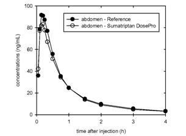
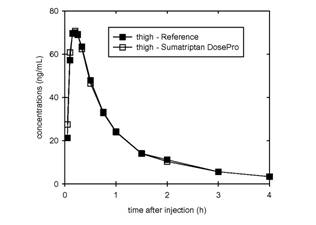

RÉSUMÉ DES CARACTÉRISTIQUES DU PRODUIT
ANSM - Mis à jour le : 28/02/2011
SUMAVEL 6 mg/0,5 ml, solution injectable en injecteur sans aiguille
2. COMPOSITION QUALITATIVE ET QUANTITATIVE
Chaque injecteur sans aiguille contient 6 mg de sumatriptan (sous forme de succinate) dans 0,5 ml de solution
Excipient: une dose de 0,5 ml contient 1,4 mg de sodium.
Pour la liste complète des excipients, voir rubrique 6.1.
Solution injectable en injecteur sans aiguille.
Solution limpide, incolore à jaune pâle.
4.1. Indications thérapeutiques
Traitement de:
· la crise de migraine, avec ou sans aura,
· de la crise d'algie vasculaire de la face (Syndrome de Bing-Horton).
SUMAVEL ne devra pas être utilisé comme traitement prophylactique.
4.2. Posologie et mode d'administration
Posologie
Ne pas dépasser les recommandations posologiques suivantes:
Traitement de la crise de migraine
La posologie recommandée de SUMAVEL est de 1 administration sous-cutanée unique de 6 mg. L'augmentation de la dose par l'administration de doses répétées n'améliore pas la réponse. Une deuxième dose peut être utilisée seulement si le patient a été soulagé après la première injection mais que les symptômes réapparaissent, à condition de respecter un intervalle d'au moins 1 heure entre les 2 doses.
La posologie maximale par 24 heures est de 2 administrations de 6 mg (soit 12 mg).
Si un patient n'a pas été soulagé par une dose de SUMAVEL, une seconde dose ne doit pas être utilisée pour la même crise. Il est possible d'utiliser des médicaments à base d'aspirine, d'anti-inflammatoires non stéroïdiens ou de paracétamol pour le traitement de cette crise. SUMAVEL peut être utilisé pour traiter des crises suivantes.
Il est recommandé d'utiliser SUMAVEL en monothérapie dans le traitement de la crise de migraine et de ne pas le donner de façon concomitante avec de l'ergotamine ou des dérivés de l'ergotamine (y compris le méthysergide) (voir rubrique 4.3).
Il est conseillé de prendre le traitement aussi précocement que possible dès la survenue de la crise de migraine ou des symptômes associés comme les nausées, vomissements, photophobie. Cependant, le produit est aussi efficace quel que soit le stade de la crise durant lequel il est administré. L'administration durant l'aura migraineuse, avant la survenue de tous les autres symptômes, peut ne pas prévenir le développement de la céphalée.
Traitement de la crise d'algie vasculaire de la face
La posologie recommandée chez l'adulte est de 1 administration sous-cutanée de 6 mg par crise. L'augmentation de la dose par l'administration de doses répétées n'améliore pas la réponse. Une deuxième dose peut être utilisée seulement si le patient a été soulagé après la première injection mais que les symptômes réapparaissent, à condition de respecter un intervalle d'au moins 1 heure entre les 2 doses.
La posologie maximale par 24 heures est de 2 administrations de 6 mg (soit 12 mg).
Patient âgé (de plus de 65 ans)
Il n'y a pas d'expérience de l'utilisation de SUMAVEL chez les patients âgés de plus de 65 ans. La pharmacocinétique n'a pas suffisamment été étudiée dans cette population. Par conséquent, tant que des données cliniques complémentaires ne seront pas disponibles, l'utilisation du sumatriptan chez les patients âgés de plus de 65 ans n'est pas recommandée.
Enfants et adolescents (de moins de 18 ans)
L'utilisation de SUMAVEL n'est pas recommandée chez les enfants et les adolescents (moins de 18 ans) compte tenu de l'absence de données de l'utilisation de SUMAVEL dans ces catégories d'âges.
Mode d'administration
SUMAVEL est adapté pour être auto-administré dans l'abdomen ou la cuisse. Il n'est pas adapté pour être administré dans d'autres parties du corps notamment les bras. SUMAVEL doit être administré par voie sous-cutanée et non par voie intramusculaire ou intraveineuse.
SUMAVEL doit être utilisé immédiatement après la préparation de l'injecteur sans aiguille. Les patients doivent être prévenus de lire attentivement « les instructions pour l'utilisation » à la fin de la Notice.
Hypersensibilité au sumatriptan ou à l'un des excipients.
Le sumatriptan ne doit pas être utilisé chez les patients ayant des antécédents d'infarctus du myocarde ou une pathologie cardiaque ischémique, un vasospasme coronarien (Angor de Prinzmetal), une pathologie vasculaire périphérique ou chez les patients présentant des symptômes ou des signes compatibles avec une pathologie cardiaque ischémique.
Le sumatriptan ne doit pas être administré aux patients présentant des antécédents d'accident vasculaire cérébral (AVC) ou d'accident ischémique transitoire (AIT).
Le sumatriptan ne doit pas être administré aux patients ayant une insuffisance hépatique sévère.
L'utilisation du sumatriptan est contre-indiquée chez les patients ayant une hypertension modérée ou sévère et chez les patients ayant une hypertension légère non contrôlée.
L'administration concomitante avec l'ergotamine ou les dérivés de l'ergotamine (y compris le méthysergide), un autre triptan/agoniste des récepteurs de la 5-hydroxytriptamine1 (5-HT1) est contre-indiquée (voir rubrique 4.5).
L'association du sumatriptan avec les inhibiteurs de la monoamine-oxydase est contre-indiquée. Le sumatriptan ne doit pas être utilisé dans les 2 semaines suivant l'arrêt d'un traitement par les inhibiteurs de la monoamine-oxydase.
4.4. Mises en garde spéciales et précautions d'emploi
Le sumatriptan ne doit être utilisé qu'après avoir établi un diagnostic certain de migraine ou d'algie vasculaire de la face.
SUMAVEL doit être administré par voie sous-cutanée et non par voie intramusculaire ou intraveineuse.
SUMAVEL n'est pas indiqué dans le traitement des migraines hémiplégiques, basilaires ou ophtalmoplégiques.
Les doses recommandées de sumatriptan ne doivent pas être dépassées.
Avant de traiter les céphalées des patients sans diagnostic antérieur de migraine, et des patients migraineux présentant des symptômes atypiques, il est nécessaire d'exclure d'autres pathologies neurologiques potentiellement graves. Il faut noter que les migraineux peuvent présenter un risque accru de survenue d'événements vasculaires cérébraux (par exemple, accident cérébro-vasculaire, accident ischémique transitoire).
Après administration, la prise de sumatriptan peut être associée à des symptômes transitoires comprenant des douleurs thoraciques ou une sensation d'oppression pouvant être intense et pouvant s'étendre au niveau de la gorge (voir rubrique 4.8.). Si la symptomatologie évoque une ischémie cardiaque, des doses supplémentaires de sumatriptan ne doivent pas être administrées et des explorations appropriées devront être réalisées avant de pratiquer des examens adaptés pour éliminer la présence de troubles ischémiques.
Le sumatriptan ne doit pas être administré aux patients ayant des facteurs de risque de maladie cardiaque ischémique, y compris les fumeurs ou les patients utilisant des thérapies de substitution à base de nicotine, sans un bilan cardiovasculaire préalable (voir rubrique 4.3). Une attention particulière doit être portée aux femmes postménopausées ou périménopausées et aux hommes de plus de 40 ans présentant ces facteurs de risque. Cependant, ce bilan peut ne pas identifier tous les patients qui ont une maladie cardiovasculaire et, dans de très rares cas, des événements cardiaques graves sont survenus chez des patients sans maladie cardiovasculaire sous-jacente.
Le sumatriptan doit être utilisé avec précaution chez les patients avec une hypertension légère contrôlée compte tenu que des augmentations transitoires de la pression artérielle et de la résistance vasculaire périphérique ont été observées chez un petit pourcentage des patients. En cas d'hypertension modérée à sévère le sumatriptan est contre-indiqué.
Après commercialisation, de rares cas de syndrome sérotoninergique (incluant une modification de la conscience, des manifestations neurovégétatives et des troubles neuromusculaires) ont été décrits après utilisation concomitante d'un inhibiteur sélectif de la recapture de la sérotonine (ISRS) et du sumatriptan. Des cas de syndrome sérotoninergique ont également été rapportés après administration concomitante de triptans et d'inhibiteurs de la recapture de la sérotonine et de la noradrénaline (IRSN). Si l'association du sumatriptan et d'un ISRS/IRSN est cliniquement justifiée, une surveillance appropriée du patient est recommandée (voir rubrique 4.5).
Le sumatriptan doit être administré avec précaution chez les patients présentant des facteurs pouvant modifier l'absorption, le métabolisme ou l'élimination du médicament, par exemple chez l'insuffisant hépatique ou rénal.
Le sumatriptan doit être utilisé avec précaution chez les patients ayant des antécédents de convulsions ou présentant d'autres facteurs de risque susceptibles d'abaisser le seuil épileptogène, car des cas de convulsions ont été rapportés en association avec le sumatriptan (voir rubrique 4.8).
Chez les patients ayant une hypersensibilité connue aux sulfamides, des réactions allergiques peuvent être observées après administration de sumatriptan. Ces réactions vont de l'allergie cutanée aux réactions anaphylactiques.
La démonstration d'une hypersensibilité croisée est limitée, cependant la prudence est recommandée avant d'utiliser le sumatriptan chez ces patients.
La fréquence des effets indésirables peut être augmentée par l'association de triptans à des préparations contenant du millepertuis (Hypericum perforatum).
Des céphalées chroniques quotidiennes/aggravations des céphalées ont été rapportées en cas d'abus de sumatriptan, ce qui peut nécessiter un arrêt du médicament.
L'utilisation prolongée d'un traitement antalgique pour traiter les céphalées peut entraîner une aggravation de celles-ci. Dans ces cas ou en cas de suspicion, un avis médical est nécessaire et le traitement doit être interrompu. Le diagnostic de céphalée par abus médicamenteux (CAM) doit être suspecté chez les patients présentant des céphalées fréquentes ou quotidiennes malgré (ou à cause) de l'utilisation régulière d'un traitement anticéphalalgique.
Ce médicament contient moins de 1 mmol de sodium (23 mg) par dose, c'est-à-dire « sans sodium ».
4.5. Interactions avec d'autres médicaments et autres formes d'interactions
Il n'a pas été mis en évidence d'interaction avec le propranolol, la flunarizine, le pizotifène ou l'alcool.
Les données concernant l'interaction du sumatriptan avec les médicaments contenant de l'ergotamine ou autres triptans sont limitées. Le risque accru de vasospasme coronarien est théoriquement possible. L'administration concomitante de ces deux produits est donc contre-indiquée (voir rubrique 4.3).
L'intervalle nécessaire entre l'utilisation du sumatriptan et des médicaments contenant de l'ergotamine ou un autre triptan/agoniste des récepteurs 5-HT1 n'est pas connu. Il dépendra aussi des doses et du type de produits utilisés. Les effets peuvent être additifs. Il est conseillé d'attendre au moins 24 heures après l'utilisation de médicaments contenant de l'ergotamine ou un autre triptan/agoniste des récepteurs 5-HT1, avant l'administration du sumatriptan. Inversement, il est conseillé d'attendre au moins 6 heures après l'utilisation du sumatriptan avant l'administration d'un médicament contenant de l'ergotamine et au moins 24 heures avant l'administration d'un autre triptan/agoniste des récepteurs 5-HT1.
Une interaction peut se produire entre le sumatriptan et les IMAO. L'administration concomitante de ces deux produits est donc contre-indiquée (voir rubrique 4.3).
Après commercialisation, de rares cas de syndrome sérotoninergique (incluant une modification de la conscience, des manifestations neurovégétatives et des troubles neuromusculaires) ont été décrits après utilisation concomitante d'un inhibiteur sélectif de la recapture de la sérotonine (ISRS) et du sumatriptan. Des cas de syndrome sérotoninergique ont également été rapportés après administration concomitante de triptans et d'IRSN (voir rubrique 4.4).
Des données d'après commercialisation, provenant de l'utilisation du sumatriptan au cours du premier trimestre de la grossesse chez plus de 1 000 femmes, sont disponibles. Bien que ces données soient insuffisantes pour tirer des conclusions définitives, elles ne montrent pas une augmentation du risque tératogène. L'expérience de l'utilisation du sumatriptan au cours des deuxième et troisième trimestres de la grossesse est limitée.
Les études chez l'animal n'indiquent pas d'effets tératogènes directs ou des effets nuisibles sur le développement péri et postnatal. Toutefois, la viabilité « embryofœtale » peut être altérée chez le lapin (voir rubrique 5.3).
En conséquence, l'administration de sumatriptan ne doit être envisagée que si le bénéfice attendu pour la mère est supérieur aux risques possibles pour le fœtus.
Il a été démontré qu'après administration sous-cutanée le sumatriptan est excrété dans le lait maternel.
L'exposition du nourrisson peut être minimisée en évitant l'alimentation au lait maternel dans les 12 heures suivant le traitement. Le lait collecté pendant cette période doit être éliminé.
4.7. Effets sur l'aptitude à conduire des véhicules et à utiliser des machines
Aucune donnée n'est disponible. Une somnolence due à la migraine ou à son traitement par le sumatriptan peut survenir. Ceci peut influer sur l'aptitude à conduire des véhicules et à utiliser des machines.
Les effets indésirables sont classés ci-dessous par système-organe et par fréquence.
La classification selon la fréquence utilise la convention suivante: très fréquent (≥ 1/10), fréquent (≥ 1/100 et < 1/10), peu fréquent (≥ 1/1 000 et< 1/100), rare (≥ 1/10 000 et < 1/1 000) et très rare (< 1/10 000), incluant les cas isolés, inconnu (ne pouvant pas être estimé sur la base des données disponibles). Certains symptômes rapportés comme effets indésirables peuvent être considérés comme des symptômes associés à la migraine.
Les effets secondaires les plus fréquents associés au traitement avec le sumatriptan administré par voie sous-cutanée sont une douleur transitoire au niveau du site d'injection, un léger saignement, une ecchymose, un gonflement et un érythème.
Bien qu'on ne dispose pas de comparaisons directes, des bouffées vasomotrices, une paresthésie et des sensations de chaleur, de pression et de lourdeur pourraient être plus fréquentes après une injection sous-cutanée de sumatriptan.
Par contre, les nausées, les vomissements et la fatigue semblent être moins fréquents après une injection sous-cutanée qu'après la prise de comprimés.
Affections du système immunitaire
Inconnu: réactions d'hypersensibilité allant d'une allergie cutanée à une réaction anaphylactique.
Affections psychiatriques
Inconnu: anxiété.
Affections du système nerveux
Fréquent: vertiges, somnolence, troubles de la sensibilité dont paresthésie et hypoesthésie.
Inconnu: convulsions, bien que certaines de ces convulsions soient survenues chez des patients présentant soit des antécédents de convulsions, soit des facteurs de risque de convulsions. Quelques cas ont été rapportés chez des patients en l'absence de tels facteurs de risque. Tremblements, dystonie, nystagmus, scotome.
Affections oculaires
Inconnu: papillotements, diplopie, baisse de la vision. Perte de la vision, dont certains cas peuvent être permanents. Toutefois, des troubles visuels peuvent également survenir au cours de la crise de migraine.
Affections cardiaques
Inconnu: bradycardie, tachycardie, palpitations, arythmies cardiaques, signes ischémiques transitoires à l'ECG, vasospasme des artères coronaires, angor, infarctus du myocarde (voir rubriques 4.3 et 4.4).
Affections vasculaires
Fréquent: augmentations transitoires de la pression artérielle survenant juste après le traitement, flush.
Inconnu: hypotension, syndrome de Raynaud.
Affections respiratoires, thoraciques et médiastinales
Fréquent: dyspnée
Affections gastro-intestinales
Fréquent: Des nausées et vomissements sont survenus chez certains patients, sans que l'on puisse déterminer si ces symptômes sont liés au SUMAVEL ou à la pathologie sous-jacente.
Inconnu: colites ischémiques, diarrhées.
Affections de la peau et du tissus sous-cutané
Inconnu: hyperhidrose.
Affections musculo-squelettiques et systémiques
Fréquent: sensation de lourdeur (habituellement transitoire, mais pouvant être intense et intéresser n'importe quelle partie du corps, y compris la poitrine et la gorge). Myalgies.
Inconnu: raideur de la nuque, arthralgies.
Troubles généraux et anomalies au site d'administration
Très fréquent: douleur transitoire au site d'injection. Piqûre/brûlure, gonflement, érythème, hématome et saignements au site d'injection, ont aussi été rapportés.
Fréquent: douleur, sensation de chaleur ou de froid, de pression ou d'oppression (ces effets sont habituellement transitoires, mais ils peuvent être intenses et intéresser n'importe quelle partie du corps, y compris la poitrine et la gorge). Sensation de faiblesse, fatigue (ces deux effets sont le plus souvent d'intensité faible à modérée et transitoires).
Investigations
Très rare: Des perturbations mineures des tests hépatiques ont été occasionnellement observées.
Il y a eu des cas de surdosage avec le sumatriptan utilisé par voie sous-cutanée..
Des patients ont reçu une injection sous-cutanée unique allant jusqu'à 12 mg sans effets indésirables importants.
Des doses allant jusqu'à 16 mg par voie sous-cutanée n'ont pas entraîné d'effets indésirables autres que ceux mentionnés.
En cas de surdosage avec SUMAVEL, le patient doit être mis sous surveillance médicale pendant au moins 10 heures et un traitement symptomatique standard doit être administré, si nécessaire. L'effet de l'hémodialyse ou de la dialyse péritonéale sur les concentrations plasmatiques de sumatriptan n'est pas connu.
5. PROPRIETES PHARMACOLOGIQUES
5.1. Propriétés pharmacodynamiques
Classe pharmacothérapeutique: Analgésique; antimigraineux; Agonistes sélectifs des récepteurs 5 HT1, Code ATC: N02CC01.
Le sumatriptan est un agoniste spécifique et sélectif des récepteurs à la 5-hydroxy-tryptamine-1 (5HT1d) sans effet sur les autres sous-types de récepteurs 5HT (5HT2 à 5HT7). Les récepteurs vasculaires 5HT1d sont localisés principalement au niveau des vaisseaux sanguins crâniens et induisent une vasoconstriction. Chez l'animal, le sumatriptan est responsable d'une vasoconstriction sélective de la circulation artérielle carotidienne sans altération de la circulation cérébrale. La circulation artérielle carotidienne vascularise les tissus extracrâniens et intracrâniens tels que les méninges et on pense que la dilatation et/ou la formation d'œdèmes au niveau de ces vaisseaux pourraient correspondre au mécanisme de la migraine chez l'homme.
De plus, les résultats des études chez l'animal suggèrent que le sumatriptan inhibe l'activité du nerf trijumeau. Ces deux actions (vasoconstriction crânienne et inhibition de l'activité du nerf trijumeau) pourraient contribuer à l'action anti-migraineuse du sumatriptan chez l'homme.
La réponse clinique débute 10 à 15 minutes après injection sous-cutanée de 6 mg.
En raison de sa voie d'administration, SUMAVEL peut être particulièrement adapté aux patients souffrant de nausées et vomissements au cours d'une crise.
5.2. Propriétés pharmacocinétiques
Après administration d'une injection sous-cutanée, le sumatriptan a une biodisponibilité moyenne élevée (96 %). Le pic plasmatique est de 72 ng/ml atteint en 25 minutes après une dose sous-cutanée de 6 mg. Les concentrations plasmatiques mesurées 1 heure après l'administration sous-cutanée sont d'approximativement 23 ng/ml.
Après une administration orale, le sumatriptan est rapidement absorbé et 70 % de la concentration maximale est atteinte en 45 minutes. Le pic de concentration plasmatique moyen après une administration de 100 mg est de 54 ng/ml (pouvant aller de 24 à 71 ng/ml). La biodisponibilité absolue moyenne est de 14 % (pouvant aller de 10 à 20 %), suite à une métabolisation présystémique et à une absorption incomplète.
Les paramètres pharmacocinétiques plasmatiques du sumatriptan après une administration sous-cutanée de doses uniques de 6 mg sumatriptan avec SUMAVEL 6 mg/0,5 ml, solution injectable en injecteur sans aiguille ont été comparés avec ceux obtenus avec la même dose administrée en utilisant un produit de référence injectable par une aiguille pour injection dans la paroi abdominale ou dans la cuisse. Vingt-quatre volontaires en bonne santé ont été évalués dans une étude ouverte randomisée croisée en 4 phases; chaque sujet a été évalué avec chaque formulation (SUMAVEL 6 mg/0,5 ml, solution injectable en injecteur sans aiguille et produit de référence) pour chaque site d'injection (paroi abdominale et cuisse).
Les évolutions du taux plasmatique de sumatriptan étaient très similaires pour les deux produits (Figure 1).
SUMAVEL 6 mg/0,5 ml, solution injectable en injecteur sans aiguille et le produit de référence étaient similaires en termes de vitesse et de la biodisponibilité systémique et leurs paramètres pharmacocinétiques étaient bioéquivalents en termes de pic (Cmax), d'exposition totale (ASC0-tz, ASC0-∞) et d'exposition précoce (ASC0-15 min). (Voir le tableau 2.) On n'a pas observé de différences cliniquement significatives entre SUMAVEL 6 mg/0,5 ml, solution injectable en injecteur sans aiguille et le produit de référence pour les valeurs médianes de tmax et de la demi-vie terminale apparente (t1/2).
Figure 1: Evolutions des moyennes géométriques de la concentration plasmatique après une administration unique de 6 mg de sumatriptan par voie sous-cutanée avec SUMAVEL 6 mg/0,5 ml, solution injectable en injecteur sans aiguille et avec le produit de référence
|
 |
 |
Evolutions dans le temps des moyennes géométriques de la concentration plasmatique (N: 24) après une administration unique de 6 mg de sumatriptan avec SUMAVEL 6 mg/0,5 ml, solution injectable en injecteur sans aiguille et avec le produit de référence (Sumatriptan Injection); administration dans la paroi abdominale (cadre de gauche) et dans la cuisse (cadre de droite)
Tableau 2. Données pharmacocinétiques et de bioéquivalence pour SUMAVEL 6 mg/0,5 ml, solution injectable en injecteur sans aiguille par rapport à Sumatriptan Injection; applications dans la paroi abdominale ou dans la cuisse
Abdomen (N: 24)
|
|
SUMAVEL 6 mg/0,5 ml |
Sumatriptan Injection |
|
|
Concentration plasmatique maximale |
89,1 |
98,8 |
|
|
Cmax (ng/ml) |
(0,26) |
(0,30) |
|
|
Aire sous la courbe quantifiable |
77,9 |
83,6 |
|
|
ASC0-tz (ng⋅h/ml) |
(0,24) |
(0,25) |
|
|
Aire sous la courbe entre 0 et 15 |
16,3 |
17,2 |
|
|
minutes - ASC0-15 min (ng⋅h/ml) |
(0,32) |
(0,34) |
|
|
Temps d'obtention du pic |
12 |
11 |
|
|
tmax * (min) |
(6 - 15) |
(6 - 20) |
Moyennes géométriques et coefficients de variation géométriques (CV) pour Cmax et ASC; médiane et plage pour tmax.
Cuisse (N: 24)
|
|
SUMAVEL 6 mg/0,5 ml |
Sumatriptan Injection |
|
|
Concentration plasmatique maximale |
76,0 |
76,1 |
|
|
Cmax (ng/ml) |
(0,33) |
(0,45) |
|
|
Aire sous la courbe quantifiable |
76,8 |
75,0 |
|
|
ASC0-tz (ng⋅h/ml) |
(0,26) |
(0,44) |
|
|
Aire sous la courbe entre 0 et 15 |
13,3 |
12,8 |
|
|
minutes - ASC0-15 min (ng⋅h/ml) |
(0,37) |
(0,47) |
|
|
Temps d'obtention du pic |
12 |
15 |
|
|
tmax * (min) |
(3 - 30) |
(9 - 30) |
Moyennes géométriques et coefficients de variation géométriques (CV) pour Cmax et ASC; médiane et plage pour tmax.
La liaison aux protéines plasmatiques est faible (14-21 %), le volume de distribution moyen est de 170 litres.
La demi-vie d'élimination est d'environ 2 heures.
La clairance plasmatique moyenne est d'environ 1160 ml/min et la clairance plasmatique rénale moyenne est d'environ 260 ml/min. La clairance non rénale représente environ 80 % de la clairance totale. Le sumatriptan est éliminé tout d'abord par métabolisation oxydative due à la monoamine oxydase A.
Le principal métabolite, l'analogue acide indolacétique du sumatriptan, est principalement excrété dans les urines, où il est retrouvé sous forme d'acide libre et de glucuroconjugué. Il n'a pas d'activité 5HT1 ou 5HT2 connue. Les métabolites mineurs n'ont pas été identifiés.
5.3. Données de sécurité préclinique
Les études de toxicité aiguë et chronique du sumatriptan n'ont pas montré d'effets toxiques avec des doses thérapeutiques pour l'humain. Après administration sous-cutanée des réactions locales au niveau du site d'injection ont été observées.
Lors d'une étude de fertilité chez le rat, une réduction du succès de l'insémination a été observée à des taux d'exposition bien supérieurs à l'exposition maximale chez l'homme.
Chez le lapin, une embryolétalité sans anomalie tératogène marquée a été observée. La pertinence de ces résultats chez l'homme n'est pas connue.
Le sumatriptan n'a pas montré d'activité génotoxique et carcinogène dans les études réalisées sur des modèles in vitro et chez l'animal.
Eau pour préparations injectables.
Sans objet.
3 ans.
6.4. Précautions particulières de conservation
Ne pas congeler. A conserver à une température ne dépassant pas 30°C.
6.5. Nature et contenu de l'emballage extérieur
Injecteur sans aiguille en acétal avec capsule en verre borosilicate incolore (type I) contenant 0,5 ml de solution.
Boîtes de 1, 2, 4 ou 6 injecteurs sans aiguille.
Toutes les présentations peuvent ne pas être commercialisées.
6.6. Précautions particulières d’élimination et de manipulation
Pas d'exigences particulières.
7. TITULAIRE DE L’AUTORISATION DE MISE SUR LE MARCHE
DESITIN ARZNEIMITTEL GMBH
WEG BEIM JAGER 214
22335 HAMBURG
ALLEMAGNE
8. NUMERO(S) D’AUTORISATION DE MISE SUR LE MARCHE
· 498 508-5 ou 34009 498 508 5 3: 6 ml de solution en injecteur sans aiguille (verre/acétal). Boîte de 1.
· 498 509-1 ou 34009 498 509 1 4: 6 ml de solution en injecteur sans aiguille (verre/acétal). Boîte de 2.
· 498 511-6 ou 34009 498 511 6 4: 6 ml de solution en injecteur sans aiguille (verre/acétal). Boîte de 4.
· 498 512-2 ou 34009 498 512 2 5: 6 ml de solution en injecteur sans aiguille (verre/acétal). Boîte de 6.
9. DATE DE PREMIERE AUTORISATION/DE RENOUVELLEMENT DE L’AUTORISATION
[à compléter par le titulaire]
10. DATE DE MISE A JOUR DU TEXTE
[à compléter par le titulaire]
Sans objet.
12. INSTRUCTIONS POUR LA PREPARATION DES RADIOPHARMACEUTIQUES
Sans objet.
Liste I.